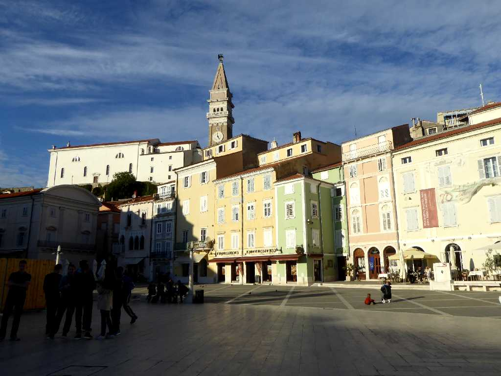
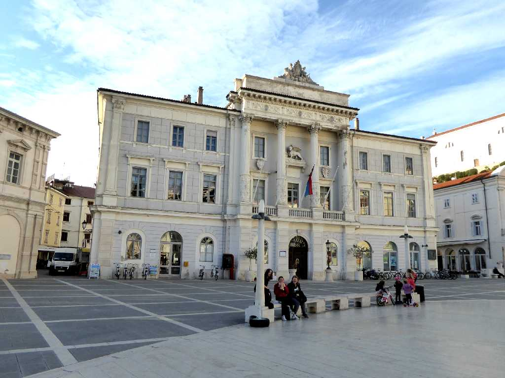
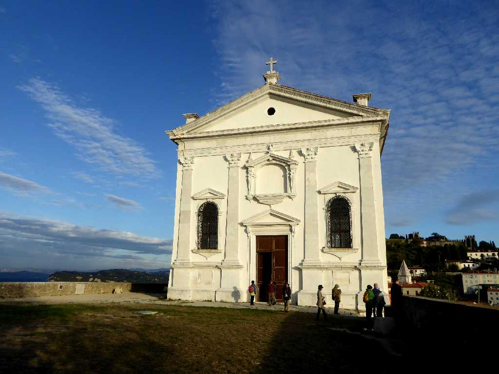
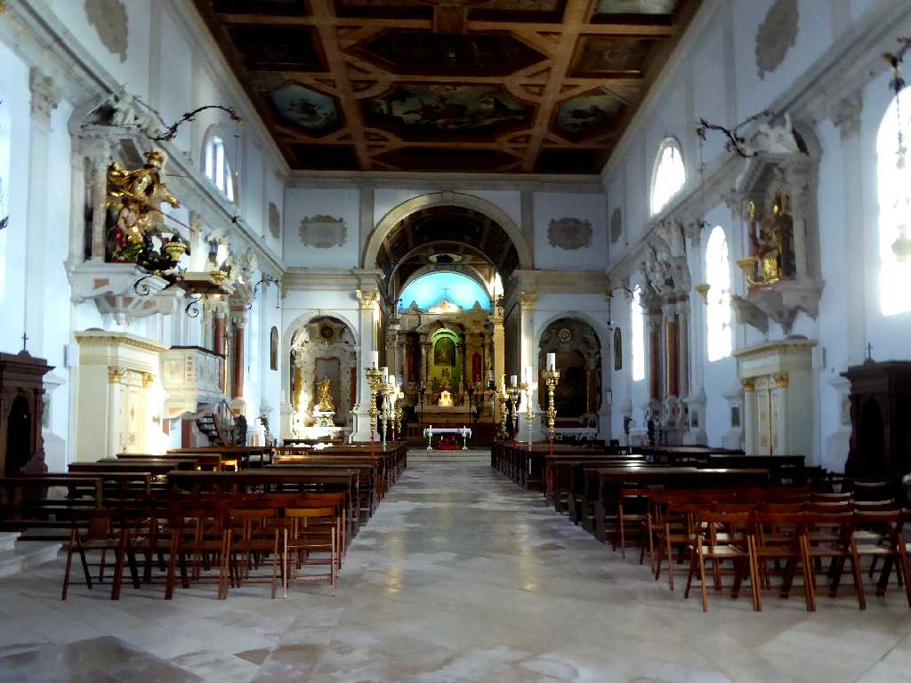
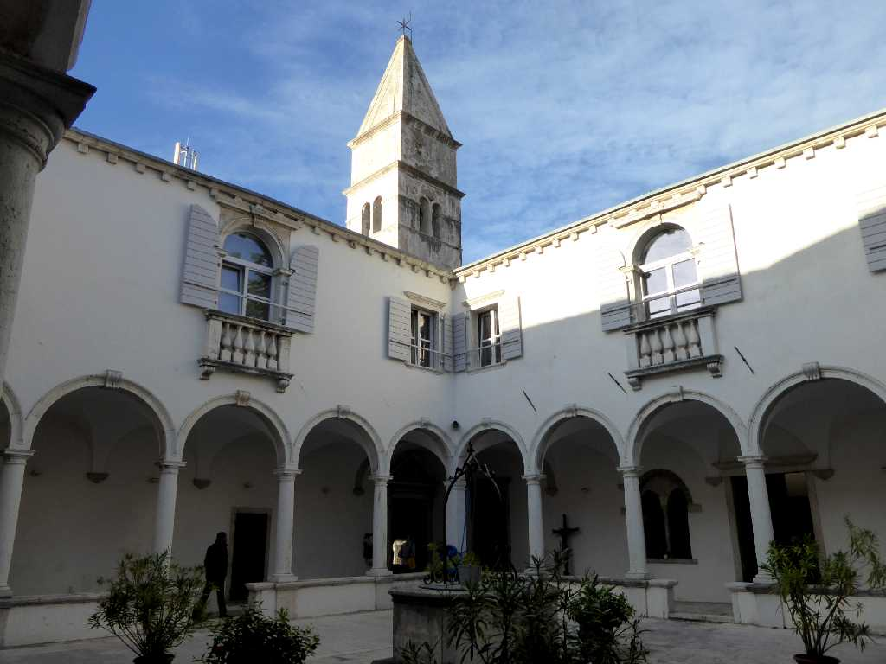
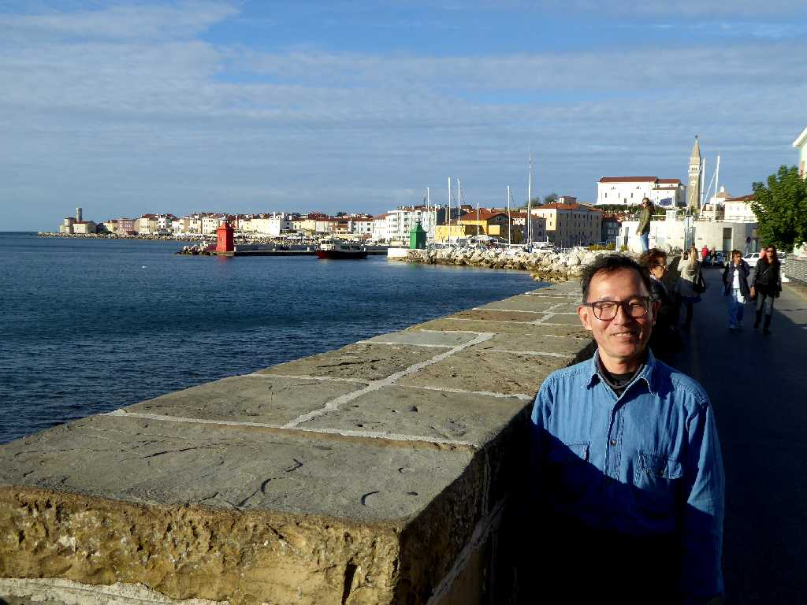

Tartinijev trg (Tartini Square) Piran
ローマ時代より栄え中世の文化遺産が残るアドリア海の美しい街ピラン

Mestna hiša Tartinijev trg Piran
タルティーニ広場にあるネオゴシック様式のピラン市庁舎

Župnijska cerkev svetog Jurija
１３４４年に創られ１６３７年に改築されたゴシック様式の聖ギオルギウス大聖堂

Župnija Piran
バロック様式の祭壇

Minoritski samostan svetog Frančiška
１３０１年に創られたフランシス会の修道院

October 7 2016 Piran